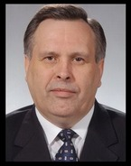

|
03-11-2015 27 ноября состоится торжественная церемония закрытия областной Вахты памяти. В текущем году на территории Тверской области в поисковой работе участвуют 113 отрядов, 65 из которых представляют другие регионы России. Ежегодно количество бойцов, приезжающих на тверскую землю присоединиться к историко-патриотическому движению, растет. В 2014-м вели работу 74 поисковых отряда, из них 30 объединений из других областей.
28-10-2015 А мама уже и не надеялась… В силу многочисленных неточностей и ошибок в документах ЦАМО РФ о безвозвратных потерях не без труда удалось установить кто же такой красноармеец ЯКОВЛЕВ Иван Михайлович, похороненный на воинском мемориале, что на гражданском кладбище в Больших Перемерках.
15-10-2015 В Книге Памяти Тверской области (т. 8, с. 427, Нелидовский район) есть такая запись: «СУХАРЕВИЧ Петр Филиппович, род. 1900, дер. Дорохи, Шумильский сельсовет. Призван в 1924. Полковник, пропал без вести, май 1943». Как на самом деле сложилась фронтовая судьба нашего земляка, читайте в материале, подготовленном к 70-летию Победы отделом краеведческой работы Нелидовской межпоселенческой центральной библиотеки.
01-09-2015 Уважаемые коллеги, предлагаем Вам ознакомиться с фотоотчетом немецких партнеров Фонда «Жить и Помнить» в городе Херлесхаузене, Германия. Бывшие военнослужащие и солдаты Бундесвера во главе с г-ном Райнером Римбахом (мэр Бургхарда) и г-ом Гельмутом Шмидтом (бывший мэр г. Херлесхаузена) были приглашены на очередные добровольные работы по уходу и приведению в порядок захоронений советских солдат. Основная их цель поддержание мира, и показать, что они помнят великий подвиг всех солдат, участников Второй Мировой войны.
16-06-2015 -В разделе «Публикации» выложена статья газеты городского округа Домодедово "Призыв" под названием "Цветы для отца...", описывающая нелегкий путь, который пришлось пройти Нине Чумаковой, чтобы разыскать место захоронения ее отца.
12-05-2015 Благодарность авторам за изданную Фондом Книгу Памяти от Тверского Клуба Краеведов
23-04-2015 Продолжают поступать отзывы жителей области на изданную Фондом Книгу Памяти. Один из них решили выложить в новости.
22-04-2015 На ресурсе "Обработка и представление архивных карт" http://boxpis.ru/ размещены советские и германские карты периода Великой Отечественной войны http://boxpis.ru/svg/?p=2905
10-04-2015 9 апреля 2015 года в ДК «Химволокно» Тверской фонд «Жить и Помнить» провел презентацию «Книги Памяти советских воинов Великой Отечественной войны 1941-1945 годов - уроженцев Калининской области (в границах 1939-1944 гг., 1990 г.), считавшихся пропавшими без вести».
26-03-2015 По следам неизвестных героев: как развивается поисковое движение в Тверской области
12-03-2015 Могилы найдены, имена установлены (о результатах работы международной поисковой экспедиции в Польше и розыске родственников опознанных советских воинов).
05-03-2015 Много месяцев ушло на установление места гибели, современного захоронения и увековечение Памяти красноармейца 612-го стрелкового полка 144 стрелковой дивизии БОРИСОВА Геннадия Парфирьевича, погибшего 26 декабря 1943 г. при освобождении Белоруссии.
04-03-2015 В 1965 г., выступая в Казани перед большой аудиторией общественности, легендарный советский снайпер Герой Советского Союза Василий Иванович Зайцев рассказал о своём друге снайпере Анатолии Чехове. Вместе они начали свой боевой путь под Сталинградом, в разных частях, но в составе одной 62-й армии. Там же открыли боевой счёт уничтоженных врагов. По словам Василия Григорьевича на боевом счету его друга убитых солдат и офицеров противника было больше чем у него. А вот звания Героя Анатолий так и не получил.
27-02-2015 В Тверской области создано региональное отделение Общероссийской общественной организации «Поисковое движение России».
18-02-2015 С разрешения автора, С.А. Герасимовой, ведущего научного сотрудника Тверского государственного объединённого музея, выкладываем её статью «Никто не забыт?». Светлана Александровна излагает свой взгляд на близкую для нас тему - сохранение исторической ПАМЯТИ о Великой Отечественной войне.
05-02-2015 Вчера пришло очередное, из многих сотен полученных ранее, письмо с жалобой на некорректную запись в Книге Памяти Тверской области. Верным в этой записи оказались только ФИО погибшего: СЕРОВ Василий Михайлович из Бежецкого р-на.
03-02-2015 2 февраля Российская Федерация празднует День воинской славы России. В этот день в 1943 г. советская армия в битве под Сталинградом разгромила немецкие войска, обеспечив начало коренного перелома в ходе Великой Отечественной и Второй мировой войны.
05-12-2014 3 декабря жители России впервые отметили новую дату – День памяти неизвестного солдата. На мемориалах и воинских захоронениях страны проводились торжественные мероприятия.
27-10-2014 -В разделе «Публикации» выложен подготовленный к изданию документальный сборник «Герои Советского Союза — уроженцы Тверской земли — сражавшиеся в годы Великой Отечественной войны в составе Военно-Морского Флота». Автор — капитан 2 ранга в отставке Геннадий Петрович Асинкритов.
19-07-2014 -70 лет со дня освобождения Калининской области от немецко-фашистских захватчиков
07-07-2014 -В Тверской области появится памятник «Скорбящие родители».
26-02-2014 -Благотворительный фонд «Жить и Помнить», действующий при поддержке Тверской торгово-промышленной палаты, подготовил очередные главы - шестую и седьмую, «Книги памяти советских солдат Великой Отечественной войны – уроженцев Калининской области, считавшихся пропавшими без вести».
18-02-2014 -Советские пограничники из Тверской области были живыми мишенями для эсэсовцев.
10-01-2014 -Утром, 28 декабря 2013 г., ушёл из жизни один из лучших поисковиков Тверской области Дмитрий Александрович Жук.
16-12-2013 -Благотворительный фонд «Жить и Помнить», действующий при поддержке Тверской торгово-промышленной палаты, представил общественности Пятую главу Книги Памяти советских солдат – уроженцев Калининской области, пропавших без вести в годы Великой Отечественной войны.
05-12-2013 -Народный союз Германии по уходу за военными могилами, с которым сотрудничает фонд «Жить и Помнить» обращается к жителям Тверской области с просьбой сообщить об известных им захоронениях немецких солдат на территории региона. С информацией просим обращаться по телефону: (495) 936-23-65.
18-11-2013- Пришло сообщение из Новгородской общественной организации «Поисковая экспедиция «Долина».
1-10-2013- Пришло письмо от директора Смоленского областного центра «Долг» Н.Г. Куликовских.
23-09-2013- По просьбе гражданки ФРГ Виолетты В. помещаем информацию о пяти советских военнопленных, погибших и захороненных в г. Норденхам, федеральная земля Нижняя Саксония. Если у кого-то из прочитавших это сообщение, есть сведения об их родственниках, просим сообщить нам.
20-09-2013- Фонд «Жить и Помнить» готовит к изданию очередную, пятую главу, «Книги Памяти советских солдат Великой Отечественной войны 1941 - 1945 годов, считавшихся пропавшими без вести (Калининская область в её довоенных границах)». В эту главу войдут имена воинов, уроженцев Калининской области, места гибели и захоронения которых установлены и фамилии которых начинаются на букву «Д». Всех, кому самостоятельно удалось установить фронтовую судьбу своего родственника, увековеченного в Книге Памяти Тверской области пропавшим без вести, просим сообщить эти сведения для включения его имени в нашу Книгу.
19-08-2013- Дорогие друзья, уважаемые сотрудники Фонда «Жить и Помнить»!
29-07-2013- На автоматизированном Интернет-ресурсе http://boxpis.ru/ Владимир Геннадьевич Щекотилов выложил подборку обзорных карт периода Великой Отечественной войны. Смотреть здесь: http://boxpis.ru/svg/?p=2905
16-07-2013- В редакции «Российской газеты» прошло заседание Совета экспертов, на котором были обсуждены проблемы увековечения памяти погибших защитников Отечества. Вопросы, вынесенные на обсуждение, настоятельно требуют своего решения и в Тверской области. Читать здесь: http://www.rg.ru/2013/06/21/soldati-site.html
15-07-2013- В разделе «Публикации» выложены листы немецкой карты. Бои на Калининском направлении в декабре 1941 г.
10-07-2013- Во время строительных работ в г. Бобруйске обнаружено массовое захоронение времён Великой Отечественной войны.
4-07-2013- В разделе «Публикации» выложены изменения в Федеральном законе Российской Федерации от 5 апреля 2013 г. N 52-ФЗ "О внесении изменений в Закон Российской Федерации "Об увековечении памяти погибших при защите Отечества""
22-06-2013- ДЕНЬ ПАМЯТИ И СКОРБИ
21-06-2013- На Украине увековечена память уроженца Лихославльского района.
18-06-2013- В разделе «Публикации» выложена статья газеты "Тверские ведомости" - "Святая миссия Александра Терентьева"
31-05-2013- Студентам тверских колледжей вручены благодарственные письма фонда «Жить и Помнить».
9-05-2013
Сердечно поздравляем с великим праздником мужества, беззаветной любви к Родине, подлинного народного единения в отстаивании главных ценностей человеческой жизни – Днем Победы.
Склоняем голову в память всех тех, кого коснулась трагедия Великой Отечественной войны, в память ее самоотверженных героев.
Пусть все, чью жизнь избороздила война, будут сегодня окружены вниманием и заботой!
Здоровья, счастья и мира – на земле и в сердцах!
08-05-2013 -Народный союз Германии по уходу за военными могилами, с которым сотрудничает фонд «Жить и Помнить» обращается к жителям Тверской области с просьбой сообщить об известных им захоронениях немецких солдат на территории региона. С информацией просим обращаться по телефону: (495) 936-23-65.
29-04-2013 -По чьим костям катаются на санках и лыжах в Западной Двине Тверской области
24-04-2013 -Установление места гибели краснофлотца СКОМОРОХОВА С.И. и его боевых товарищей из 83-й ОСБр морской пехоты на высоте 184,1 под ст. Эриванская Краснодарского края стало для нас знаковым событием.
23-04-2013 -Около двух лет тому назад Фондом было установлено место гибели и захоронения отца тверитянки Канаевой Надежды Ивановны. Красноармеец 6-й гвардейской стрелковой дивизии КОРОТКОВ И.Д. погиб 7 июля 1943 г., на третий день Курской оборонительной операции.
22-04-2013 -По просьбе поискового отряда «Поколение» г. Твери публикуем сведения о советских военнопленных, погибших в лагере Берген-Бельзен, родившихся и призывавшихся из города Калинина.
19-04-2013 -На воинском мемориале в пос. Мигалово, г. Тверь прошло торжественное открытие юбилейной 25-й поисковой «Вахты Памяти» на Тверской земле.
17-04-2013 -12-14 апреля 2013г. в г. Калуга прошёл Всероссийский слет поисковиков.
03-04-2013 -К нам обратилась ветеран труда, отличник просвещения из Твери СЫТИНА Т.А. с просьбой выложить на сайте её стихотворение «Памятник солдату». Выполняем просьбу Тамары Анатольевны.
02-04-2013 - По нашей просьбе уважаемый Владимир Геннадьевич Щекотилов на http://boxpis.ru адаптировал несколько карт Калининского фронта за 1941 г. Это значительно упрощает поиск любого населенного пункта Калининской области, определение его координат и нахождение на современных картах. Смотреть раздел сайта «Карты Калининского фронта».
29-03-2013 - В списках захороненных в братской могиле в дер. Елизарово Оленинского района есть фамилия лейтенанта ТЕЭ Оливера Августовича, командира топографического взвода 360 гаубичного артиллерийского полка АРГК. Этот полк в июле 1942 г. входил в состав 29 Армии Калининского фронта. Имя погибшего увековечено на с. 395 10-го тома Книги памяти Тверской области.
25-02-2013- В разделе «Публикации» выложена статья руководителя Оленинской районной общественной организации «Военно-исторический поисковый центр «Орёл» Д.А.Жука "О БРАТСКИХ МОГИЛАХ."
21-02-2013 - Фонд "Жить и помнить" презентовал 4 главу Книги памяти
29-01-2013 - По просьбе жительницы г. Твери Ирины Ивановой бывший бургомистр немецкого городка Херлесхаузен Г. Шмидт перевел дневник военнопленного ГУСЕВА И.А., уроженца дер. Пупково Кимрского р-на Калининской области. Вместе с дедом Ирины Игоревны техником – интендантом 1 ранга 46 кав. дивизии Устиновым А.Ф. они были узниками шталага IX А Цигенхайм. (Скачать)
26-01-2013- 25 января в славянском зале Тверской библиотеки имени Горького прошел круглый стол на тему: «Вклад Тверской земли в разгром немецко-фашистских войск под Сталинградом».
23-01-2013- В разделе «Публикации» помещена исследовательская работа директора Архангельского государственного социально-мемориального центра «Поиск» Игоря Ивановича Ивлева «"…А в ответ тишина – он вчера не вернулся из боя!". Часть 10.
26-12-2012- В мае 2011 года у д. Опарино Калининского р-на Тверской области поисковым отрядом "Звезда" (г. Тверь) найдено санитарное захоронение
21-12-2012- В разделе «Публикации» выложен проект "Модельная программа муниципального образования Тверской области по увековечению памяти участников Великой Отечественной войны и содержанию, благоустройству воинских захоронений". Свои замечания, предложения и дополнения просим направлять на наш адрес
12-12-2012- Знать бы, о чем думал мой папа там, на немецкой земле, в свои последние минуты, – говорит Людмила Желнова. – Невозможно представить эти лагерные мучения, когда здоровые, крепкие мужчины буквально сгорали, за считанные недели уходили на тот свет.
29-11-2012- В 1942 - начале 1943 гг. сотни красноармейцев и командиров частей и соединений Калининского фронта погибли в боях у деревни Бортники Молодотудского ныне Оленинского района Тверской области. Сегодня в этой деревне или там, что от нее осталось, живут 2 пожилые женщины - свидетели тех событий. Живут забытые и брошенные всеми!
26-11-2012- В разделе «Публикации» выложена статья ведущего научного сотрудника Тверского государственного объединенного музея, кандидата исторических наук С.А.Герасимовой "Незамеченная катастрофа.История Великой Отечественной войны оказалась без ржевско-вяземского сражения"
23-11-2012- Весомый вклад в Великую Победу внесли войска Калининского фронта, участвовавшие в ряде стратегических операций 1941-1944 годов, одной из которых была операция «Марс». В разделе «Публикации» выложена, ранее не опубликованная, работа доктора военных наук профессора Хетчикова М.Д. «Калининский фронт в стратегической операции “Марс”»
15-11-2012- Руководители фонда «Жить и помнить» рассказали в пресс-центре газеты «Тверские ведомости» о поиске и увековечении памяти жертв войны
2-11-2012- В разделе «Публикации» помещена исследовательская работа директора Архангельского государственного социально-мемориального центра «Поиск» Игоря Ивановича Ивлева «"…А в ответ тишина – он вчера не вернулся из боя!". Часть 9.
27-09-2012- Представители фонда «Жить и Помнить» по увековечению памяти советских солдат, пропавших без вести в годы Великой Отечественной войны, действующего при поддержке Тверской торгово-промышленной палаты, - вице-президент Владислав Шориков и секретарь фонда Александр Терентьев приняли участие в мероприятиях, посвященные х10-летию со дня открытия совместного российско-германского военно-мемориального комплекса в городе Ржев Тверской области.
24-09-2012- В Фонд «Жить и Помнить» обратился МЕЛЕГОВ В.Г., сын погибшего а годы Великой Отечественной войны красноармейца МЕЛЕГОВА Б.Ф. Вячеслав Борисович попросил поместить на нашем сайте его обращение к Президенту России.
17-09-2012- В разделе «Публикации» помещена исследовательская работа директора Архангельского государственного социально-мемориального центра «Поиск» Игоря Ивановича Ивлева «"…А в ответ тишина – он вчера не вернулся из боя!". Часть 8.
10-08-2012- Президент Фонда "Жить и Помнить" Мусин Леонид Михайлович и ответственный секретарь Фонда Терентьев Александр Михайлович награждены ведомственной медалью МО РФ.
09-08-2012- Вернуть надежду и веру (статья газеты "Тверская жизнь")
19-07-2012- В разделе «Публикации» выложен рассказ Ивановой Ирины "Станция НАЗИЯ"
9-07-2012- В разделе «Публикации» выложен рассказ поисковика из Олениенского района Тверской области Сергея Виноградова "Мы были солдатами"
7-06-2012- Помогите найти Деда!
9-05-2012
Сердечно поздравляем с великим праздником мужества, беззаветной любви к Родине, подлинного народного единения в отстаивании главных ценностей человеческой жизни – Днем Победы.
Склоняем голову в память всех тех, кого коснулась трагедия Великой Отечественной войны, в память ее самоотверженных героев.
Пусть все, чью жизнь избороздила война, будут сегодня окружены вниманием и заботой!
Здоровья, счастья и мира – на земле и в сердцах!
1-05-2012- В разделе «Публикации» выложена статья Л. Лопуховского "К вопросу о достоверности официальных данных о безвозвратных потерях в Великой Отечественной войне"
11-04-2012- Фонд «Жить и Помнить» завершил работу по изучению персональных сведений о воинах Красной Армии, захороненных в братской могиле в поселке Мигалово, г. Тверь.
6-04-2012- В разделе «Публикации» утверждённая федеральная целевая программа «Сохранность и реконструкция военно-мемориальных объектов в 2011 - 2015 годах»
15-03-2012- В разделе «Публикации» помещена концепция федеральной целевой программы «Сохранность и реконструкция военно-мемориальных объектов в 2011 - 2015 годах»
05-03-2012- В разделе «Публикации» помещена исследовательская работа директора Архангельского государственного социально-мемориального центра «Поиск» Игоря Ивановича Ивлева «"…А в ответ тишина – он вчера не вернулся из боя!". Часть 6.
01-03-2012- Мусин Леонид Михайлович, Президент Фонда по поиску и увековечиванию жертв Второй мировой войны «Жить и Помнить», решением Высшего Совета удостоен звания лауреата Форума «Общественное признание» за активную работу по увековечиванию памяти павших защитников Отечества
27-02-2012- В разделе «Публикации» помещена статья из газеты "Тверские ведомости" "Помог фонд «Жить и помнить»".
20-02-2012- В разделе «Публикации» помещена исследовательская работа директора Архангельского государственного социально-мемориального центра «Поиск» Игоря Ивановича Ивлева «"…А в ответ тишина – он вчера не вернулся из боя!". Часть 5.
16-02-2012- Ищем родственников красноармейца Филенкова Егора Петровича, теперь не пропавшего без вести.
15-02-2012- Краткий отчёт о работе НИВПЦ «Подвиг» и проведении «Вахт Памяти»
в Тверской области за 2011 год поисковыми отрядами НИВПЦ «Подвиг».
14-02-2012- Письмо из Сургута.
13-02-2012- 7 и 8 февраля с.г. ГТРК Тверь в дневных выпусках новостей показала сюжет о работе Фонда «Жить и Помнить» по изучению сведений о воинах Красной Армии, ополченцах, партизанах и подпольщиках, захороненных в братской могиле в пос. Мигалово.
06-02-2012- Анастасия Щербакова, студентка первого курса МГОУ им. Крупской, выпускница 2011 г. Тверской СОШ №37 завершила первый этап работы над проектом, который она разрабатывала при поддержке Фонда «Жить и Помнить» с марта 2011 г.
16-12-2011- Фондом «Жить и Помнить» издана вторая глава Книги Памяти советских солдат Великой Отечественной войны 1941 – 1945 годов, считавшихся пропавшими без вести.
08-11-2011 - В разделе «Публикации» выложены работы И.И. ИВЛЕВА «Память хранима тобой. Методика обработки и анализа документальных материалов о судьбах военнослужащих в целях подготовки региональной Книги Памяти» и В.К. ЩЕРБАНОВА «Книга Памяти в новых социальных условиях».
14-10-2011- Она не пропала без вести.
01-08-2011- Государственный военный историко-культурный центр при Правительстве РФ наградил фонд «Жить и Помнить» почётным знаком «За активную работу по патриотическому воспитанию граждан Российской Федерации»..
22-07-2011- В июле 2011 года жительница города Твери Ткаченко Евгения Николаевна впервые побывала на могиле своего отца Корягина Н. Н., захороненного в братской могиле в посёлке Чернянка Белгородской области.
22-06-2011- В канун Дня памяти и скорби Фонд «Жить и Помнить» представил общественности региона новый издательский проект «КНИГА ПАМЯТИ. ГЛАВА ПЕРВАЯ».
22-06-2011- В разделе «Публикации» выложены воспоминания участника Великой Отечественной войны Федора Иванович Щербинина «Война глазами деда». Их записал, перевел в электронный вид и разместил в интернете его родственник.
22-06-2011- 70 лет с начала Великой Отечественной войны.
21-06-2011- На Николо-Малицком кладбище восстановлена могила героя Великой Отечественной войны Михаила Осташова
10-06-2011- 19 марта 2011 г. скоропостижно скончался Виктор Иванович Илюхин, депутат Государственной думы, председатель политического движения «В поддержку армии, оборонной промышленности и военной науки». В.И. Илюхин был острым критиком политической власти СССР и России начиная с перестройки, выдвигал обвинения в государственной измене последовательно против трёх президентов СССР и России — Михаила Горбачёва, Бориса Ельцина и Владимира Путина.
В последние годы своей жизни Виктор Иванович глубоко исследовал так называемую Катынскую проблему, документально доказывая свое твердое убеждение в том, что поляков в Катыни расстреляли немцы. Одну из его последних статей по этой теме читайте в разделе «Публикации».
09-05-2011
Уважаемые друзья!
Примите искренние поздравления с Днем Победы!
Это великий праздник, который уже многие десятилетия объединяет народы нашей страны, является отправной точкой в постижении таких важных понятий, как историческая память, патриотизм, справедливость, мужество и цена человеческой жизни.
Для фонда «Жить и Помнить», работающего при поддержке Тверской торгово-промышленной палаты, – это особый день. Мы стараемся делать все, чтобы ни один герой войны, ни одно солдатское захоронение не остались безымянными, чтобы известна была судьба каждого солдата. Эту работу мы намерены продолжать.
Желаем Вам счастья, мира и благополучия!
05-04-2011- С 16 по 18 февраля 2011 года в Оздоровительном Комплексе "Спасатель" МЧС России прошел семинар-практикум "Историко-архивный аспект организации работы поисковых организаций и объединений, работающих на территории Российской Федерации, в области установления судеб погибших и пропавших без вести в годы Великой Отечественной войны 1941-1945 гг.". В раздле ПУБЛИКАЦИИ выложен текст выступления на семинаре И.И. Ивлева, директора Архангельского государственного социально-мемориального центра «Поиск» по теме: «Особенности работы с архивными документальными материалами по ВОВ и документами военкоматов в целях создания, пополнения, изменения Книг Памяти».
28-03-11- В пятницу, 25-го марта в ФОНДЕ ЖИТЬ И ПОМНИТЬ состоялась встреча с членами поискового отряда «Поколение» из 37-й школы города Твери.
23-02-2011 - Уважаемые ветераны Вооруженных сил, военнослужащие, коллеги, друзья!
Сердечно поздравляем вас с Днем защитника отечества!
16-02-2011- В раздле ПУБЛИКАЦИИ можно скачать книгу "Не забудем! Не простим! Злодеяния немецко-фашистских захватчиков в районах Калининской области"
28-01-2011-В декабре 2010г. мы поместили на сайте обращение к Губернатору Тверской области Д. В. Зеленину в связи с прекращением работы сайта областной администрации "Герои земли Тверской".
21-12-2010-Воспоминания о поездке на Братскую могилу в д. Зайцева Гора
16-12-2010 -Земляки, ставшие Маршалами.
15-12-2010 -В базу поисковой системы электронной Книги Памяти Тверской области на www.history.tver.ru занесены данные 46 воинов 119, 247, 256, 359, 375 стрелковых дивизий, погибших и умерших от ран в боях за г. Калинин и при освобождении территории Калининского района в октябре - декабре 1941 года.
10-12-2010 -В разделе «Публикации» выложен очерк тверских авторов Б. Ершова, А. Власова и В. Галочкина «Лётчица - героиня из Твери».
03-12-2010 -В базу поисковой системы электронной Книги Памяти Тверской области на www.history.tver.ru сотрудниками Фонда занесены имена 14 воинов Красной Армии..
02-12-2010 -Обращение к губернатору Тверской области Д. В. Зеленину.
24-11-2010 -Эта высота и из Твери видна (Статья из газеты "Восход").
22-11-2010 -Солдаты возвращаются, но только не живые, а гранитные (письмо из Мичуринска).
18-11-2010 - В 37-ой общеобразовательной школе г. Твери прошло совещание заместителей директоров школ города по вопросу: «Гражданско-патриотическое воспитание подрастающего поколения».
09-11-2010 - Опубликован Указ Президента Российской Федерации о присвоении г. Твери почетного звания Российской Федерации "Город воинской славы".
22-09-2010 - "Такую работу трудно переоценить"
10-08-2010 - С 6 по 9 августа 2010 г. по приглашению Фонда «Жить и Помнить» в Твери находился с визитом бургомистр города Херлесхаузен господин Гельмут Шмидт.
22-07-2010 - В своей повседневной деятельности Фонд "Жить и Помнить" постоянно взаимодействует с ветеранскими организациями Тверской области. В начале июля к нам пришло письмо от Председателя областного Совета ветеранов войны и труда
25-06-2010 - Установлены родственники еще одного военнопленного, уроженца Калининской области, погибшего в шталаге IV B Херлесхаузен и захороненного на мемориальном кладбище советских военнопленных в этом немецком городке.
24-06-2010 - Пришло письмо из г. Печора, Республика Коми. Александр Исламович Сайдалиев с радостью сообщает, что в электронной Книге Памяти Тверской области нашел своих дедов Рыбенкова Александра Павловича и Рыбенкова Михаила Павловича из дер. Поддубье Фировского района. И нужно бы порадоваться вместе с этим человеком за его новые знания о судьбах своих близких. Но когда видишь, как в Книге Памяти Тверской области увековечена память о них, становится грустно, досадно и стыдно за эти ущербные записи, за свою губернию, где для власть предержащих память о павших больше подходящий лозунг для юбилеев, чем внутреннее убеждение и реальные дела.
22-06-2010 - 22 июня, в День памяти и скорби, на реконструированном ко дню 65 - летия Победы воинском мемориале, что на Вагжановском переулке в г. Твери, который по-старинке продолжают называть Смоленским кладбищем, прошло перезахоронение останков 39 воинов Красной Армии, погибших при обороне г. Калинина в районе Исаевского ручья, Дорошихи и Путиловского полигона осенью 1941 года.
09-06-2010 - 9 июля в Центре социальной реабилитации военнослужащих и членов их семей Тверской области состоялась церемония вручения десяти жителям Верхневолжья дипломов лауреатов Форума «Общественное признание» Национальной Ассоциации объединений офицеров запаса Вооруженных Сил.
09-05-2010
Уважаемые ветераны и члены их семей, родственники погибших защитников Отечества!
Уважаемые читатели!
От имени всех сотрудников фонда «Жить и Помнить» сердечно поздравляю вас с 65-летием великой Победы!
26-04-2010 - В сентябре 2009 года Фонд «Жить и Помнить» в добровольном порядке принял на себя обязательство провести проверку сведений о погребенных воинах Красной Армии, партизанах и подпольщиках на мемориальном воинском захоронении, которое находится на территории бывшего Смоленского кладбища.
29-03-2010 -администрации Михайловского сельского поселения Калининского района были переданы материалы, содержащие сведения о воинах Красной Армии, погребенных в братской могиле в дер. Долматово.
24-02-2010 - 23 февраля, в День защитника Отечества, у братской могилы, на площади Ленина был выставлен стенд «Памяти павших будем достойны».
20-01-2010 - Пришел ответ из Центрального военно-морского архива, который раскрывает судьбу нашего земляка, подводника ВАСИЛЬЕВА М.В.
18-01-2010 - В ходе реконструкции мемориального комплекса «Смоленское воинское захоронение» Фондом «Жить и Помнить» проведена проверка персональных сведений о захороненных на нем в годы Великой Отечественной войны воинах Красной Армии, подпольщиках и партизанах.
18 января 2010 г. о результатах этой проверки были проинформированы депутаты Тверской городской Думы.
18-12-2009 - 21 декабря 2009 года исполняется 130 лет со дня рождения Иосифа Виссарионовича Сталина (21.12.1879 - 5.03.1953).
17-12-2009 - исполняется 50 лет со дня образования Ракетных войск стратегического назначения
16-12-2009 - 16 декабря - день освобождения г. Калинина (г. Твери) от немецко - фашистских захватчиков.
08-12-2009 - В Тверской городской Думе.
04-12-2009 - В фонде жить и помнить начальнику архивного отдела администрации Удомельского района, Бариньяк А. В., были переданы документы красноармейца Яковлева Андрея Алексеевича, уроженца дер Тарасиха Удомельского района, погибшего в немецком плену и захороненного на мемориальном кладбище советских военнопленных в гор Херлицхаузен, ФРГ. Они будут вручены жене погибшего, Яковлевой Анне Петровне, 1913 года рождения, которая проживает в Удомельском районе. Вместе с документами Анна Петровна получит и мешочек с землёй, взятой с места захоронения.
29-10-2009 - 29 октября 2009 редактору санковской газеты Людмиле Геннадьевне Клиновой была передана земля с могилы их земляка Александра Ивановича Мариничева, который погиб 6 сентября 1944г. в лагере-лазарете военнопленных VI B и был захоронен на мемориальном кладбище советских военнопленных в городе Херлесхаузен, Федеральная земля Гессен, ФРГ.
07-10-2009 - Фондом «Жить и Помнить» была проведена пресс-конференция для корреспондентов местных телеканалов и печатных СМИ.
06-10-2009 - В Твери интенсивно продолжаются работы по реконструкции воинского захоронения на Вагжановском переулке Московского района, которое жители знают как Смоленское кладбище. В годы войны здесь были захоронены 223 воина Красной Армии, в их числе 31 партизан и подпольщик. В большинстве своем это умершие от ран и болезней в госпиталях г. Калинина.
29-09-2009 - За активную работу по восстановлению имен и мест захоронения и увековечению памяти солдат Великой Отечественной войны, числящихся пропавшими без вести, президент Тверской торгово-промышленной палаты, руководитель фонда «Жить и помнить» Леонид Мусин награжден медалью «Патриот России».
30-07-2009 - 28-30 июля Тверскую область посетила делегация Народного Союза Германии в составе девяти человек, в том числе президента союза Райнхард Фюрера и депутата бундестага ФРГ Отто Фрике.
23-07-2009 - На Тверской земле увековечена Память о герое - разведчике. |